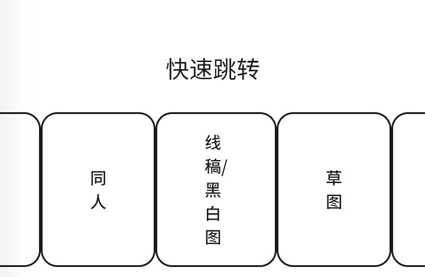
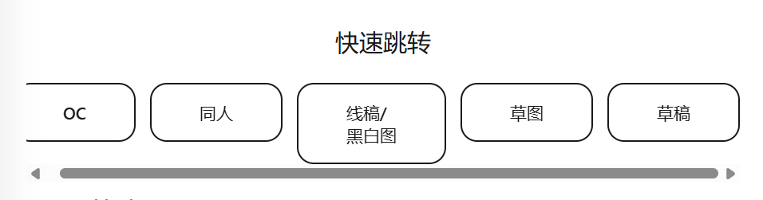

0.1~0.3.4
0.1
写了主要jc和css，做了首页和关于页，其他地方用占位符填充
0.1.1
一开始图方便把css和js全塞html里面了，做新html的时候很痛苦，花了点时间在能保证运行的情况下分开
0.2
完成了动态/文章页的大概框架，完成了协议那个弹窗的大概框架
0.2.1
为动态/文章页其他链接填充占位符
0.2.2
修了切换语言时右上角 中/eng 没有变化的问题
0.3
在动态/文章页里新增了几篇内容，完成了作品页的大概框架，可能存在翻译问题
0.3.1
为作品页的快速跳转做了手机端适配（如图）

↓

（在这张图之后已做了隐藏滑条美化）
加了个没啥用的（比我有用）音乐球
点一下是暂停/播放，轻推（被打）快速点两下是下一首，快速点三下是上一首
目前的歌单
Become Friends - 高田雅史
絶望Searching - 高田雅史
Soulwind - HyuN
COLOR - sleepyyer
AIR - SHIKI
[2024 April Fools] Algebra - Function Phantom - PuronotPuro
永久の宴 (Zekk Remix) - Aiobahn,YUC’e,Zekk
Whispers from a Distant Star - Fractal Dreamers
Cross†Over - HyuN,LyuU
Intergalactic Bound (feat. Hatsune Miku) - 雄之助,CircusP,初音ミク
失楽園 - Reol
Valhalla - Xomu,Retrograde
0.3.2
路径问题迫在眉睫，因此花时间重新设置了大部分链接和路径
0.3.3
加了个没啥用的（比我有用）音频可视化
有bug但是我快变成灰了下辈子再修
0.3.4
更新页新增音乐播放功能，新增一篇意义不明的动态，完善作品页框架，优化布局，修了几个无人在意的bug